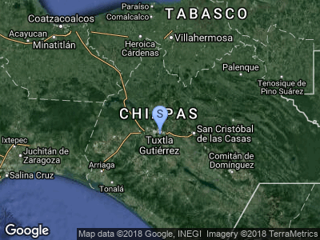

Zoológico Miguel Álvarez del Toro
Fue fundado por Eliseo Palacios, para el estudio y conservación de la fauna regional. Lleva el nombre en honor de quien fue su director. Se localiza en medio de una zona cubierta de selva mediana, que proporciona un hábitat similar al original. Las especies ahí exhibidas son ejemplares de la fauna regional y en peligro de extinción lo que hace de este zoológico el más importante en su género en el país; quetzal, tapir, guacamayas, jaguares, mono araña, pavón, nutrias, arañas e insectos son por mencionar algunas de las especies que ahí se encuentran. La visita al ZooMAT es una de las mayores experiencias de cualquier viaje por Chiapas.
Te invitamos a que disfrutes de los mágicos colores que te cautivarán durante un recorrido de 2 horas y media en donde no solo podrás observar la fauna regional sino también descansar y refrescarte mientras disfrutas del sonido de la naturaleza. De noche podrás agudizar tus sentidos en una visita guiada, viviendo una experiencia nocturna totalmente diferente.
En nuestra Tienda Domus Libraria podrás encontrar recuerdos para tus familiares y amigos además de material escrito para ampliar tus conocimientos sobre la riqueza de este Estado.
Para orgullo de los chiapanecos, el ZooMAT, es considerado por los expertos como uno de los mejores en Latinoamérica, no solo por encontrarse dentro de una reserva natural y contar con espacios que simulen el hábitat natural de cada especie, sino también porque desde su creación se ha dedicado de manera comprometida a la Investigación, Conservación, Difusión y Educación Ambiental.
1.Recorridos Diurnos:
Horarios:
Martes a Domingo: de 8:30 a 16:30 Hrs..
** Lunes cerrado al público
Martes Acceso Gratis al Público en General
Miércoles a Domingo: de 8:30 a 10:00 am
Acceso Nacional: Adultos y Niños $10.00
Extranjeros: $30.00
Después de las 10:00 am:
Costos:
General Nacional: $20.00
General Extranjeros: $60.00
Descuentos a Nacionales únicamente presentando credencial: $ 10.00 (estudiantes, maestros, jubilados, pensionados y mayores de 60 años.
2.Recorridos Nocturnos:
Acompañanos por la oscuridad de la noche, olores sonidos y sensaciones distintas. Reuna a parientes o amigos en un grupo de 10 a 15 personas mayores de 18 años. Elijan la fecha que les agrade e inscriban a su grupo con una semana de anticipación, los pagos lo pueden efectuar en Taquilla de 8:30 a 16:00 Hrs.
Los recorridos son: Martes, Jueves y Sábados por el Andador del Zoológico.
La actividad inicia a las 8:00 de la noche y tiene una duracìón aproximada de 2 horas. Debe traer ropa y zapatos cómodos.
Cuota de recuperaciòn: $ 100.00 por persona.
Ubicación: Ubicado en la Calzada Cerro Hueco s/n. sobre el Libramiento Sur de la ciudad de Tuxtla Gutiérrez
Para cualquier información:
Calzada Cerro Hueco Colonia Zapotal S/N Tuxtla Gutiérrez, Chiapas
Teléfono: 61 4 47 00, 01 y 65 ext. 51044
Correo electrónico: zoomat@semahn.chiapas.gob.mx
